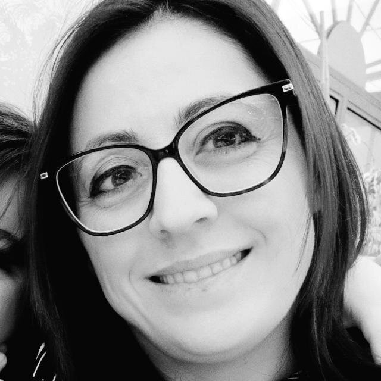
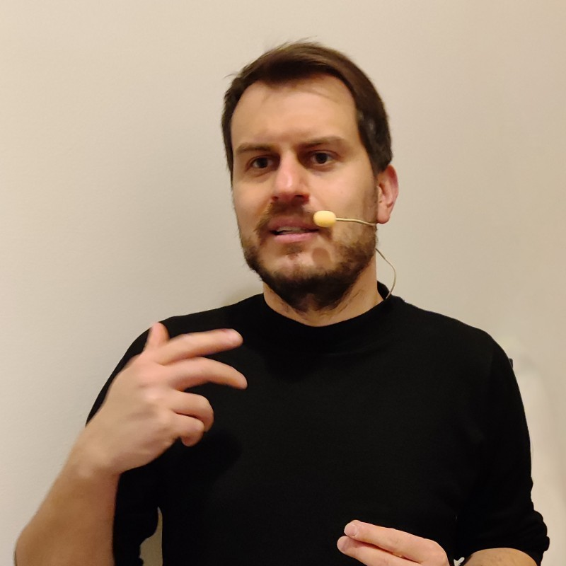

Guidare la trasformazione digitale della sanità.
Il percorso che forma lo Specialista capace di collegare management sanitario e tecnologie IT.
Fascicolo Sanitario Elettronico, telemedicina, dispositivi connessi e intelligenza artificiale stanno ridisegnando l'assistenza. Serve chi conosca i sistemi clinico-ospedalieri e sappia applicare le tecnologie per digitalizzarli e farli dialogare.
Lo Specialista per la Trasformazione Digitale analizza i sistemi IT di ospedali e regioni e disegna i piani di transizione con competenze cloud, cybersecurity e AI.
Professionisti del settore sanitario e informatici che operano in ambito sanitario, pronti a fare da ponte tra clinica e tecnologia.
Ruoli di analisi e transizione digitale in aziende sanitarie, regioni, aziende IT del settore health e centri di ricerca clinica.
Responsabile: Veronica Rossano
Responsabile: Giulio Mallardi
Responsabile: Giulio Mallardi
Responsabile: Luigi Quaranta
Responsabile: Luigi Quaranta
Modello realizzato e promosso dal Progetto EDUNEXT, iniziativa del MUR nell'ambito del PNRR — Missione 4 “Istruzione e ricerca”. Didattica digitale, flessibile e certificata. CUP di progetto E83C23003480007.
Videolezioni registrate per le parti teoriche, da seguire quando e dove preferisci.
Sessioni laboratoriali in diretta, in orario pomeridiano, pensate per chi lavora.
5 CFU e attestato di Short Master dell'Università di Bari al termine del percorso.


Apertura del bando prevista a settembre 2026; lezioni indicativamente da dicembre 2026 a febbraio 2027.Date indicative, in attesa di conferma con la pubblicazione del bando.
Vai alla pagina UniBA* € 400,00 + € 4,13 assicurativo + € 30,00 partecipazione ammissione + € 16,00 imposta di bollo
Segreteria — U.O. Master
Centro Polifunzionale Studenti · Piazza Cesare Battisti, 1° piano · Bari
master@uniba.it · +39 080 571 4109
Direzione del Master
Prof.ssa Veronica Rossano · veronica.rossano@uniba.it
Struttura proponente
Dipartimento di Informatica · Via E. Orabona 4, 70125 Bari